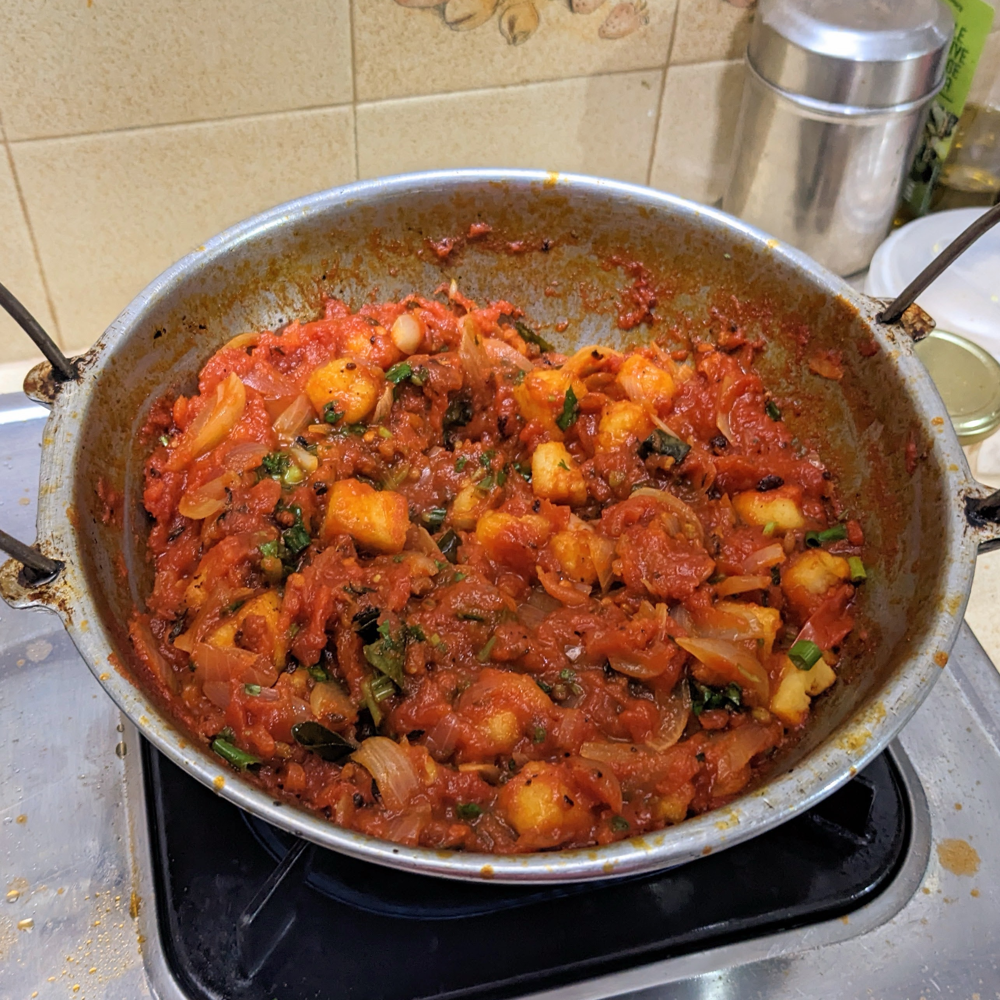

Rougaille Paneer

Ingredients
- 1 lb tomato (~ 8 medium sized tomatoes)
- ~ 12 paneer cubes
- 1 onion
- 4 curry leaves
- Thyme leaves (~ 5-6 sprigs)
- Spring onions
- Coriander leaves
- Salt
- Ghee
Procedure
- Remove curry leaves and thyme leaves and wash.
- Add tomatoes to boiling water.
- Remove after 1 minute and immediately immerse in cold water.
- Peel tomatoes and crush by hand.
- Wash, peel and cut onions to desired size.
- Wash and finely cut coriander leaves and spring onions.
- Add ghee to cooking pot and heat.
- Add paneer to ghee and fry till pale brown colour is seen.
- Remove paneer from cooking pot.
- Add curry and thyme leaves to ghee and fry.
- Add cut onions to ghee and cook gently.
- Add tomatoes to cooking pot.
- Add salt and cover.
- Allow to cook till tomato sauce thickens.
- Add fried paneer to tomato sauce and turn off flame.
- Garnish with cut coriander leaves and spring onions.
- Serve hot.
- Enjoy your Rougaille Paneer!